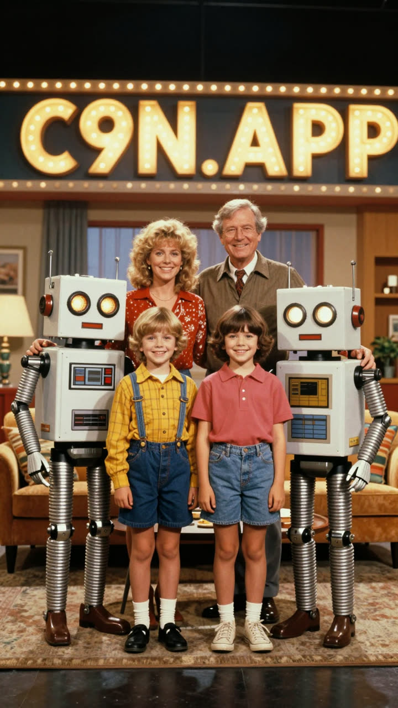

BEISPIELE / VIDEO
Ein Startbild, ein Prompt,
ein fertiger Clip.
So entstehen Videos im c9n-Content-Studio: ein Startbild als erster Frame, ein Prompt für Handlung, Kamera und Ton – gerendert lokal auf der eigenen GPU mit MiniMax-H3. Kopiert den Prompt und passt ihn an eure Szene an.

Der Prompt
Use the supplied image as the exact opening frame. Create a hilarious, high-budget 1980s live-action family comedy movie scene, photographed on a real soundstage with practical robot costumes, animatronics, handmade props, vintage wardrobe, and authentic 35mm film color. The entire group suddenly hears something above them. Everyone’s eyes dart upward at the same moment. The men, women, children, and robots dramatically tilt their heads back, point toward the ceiling, and erupt into chaotic celebration. They gasp, scream, laugh, jump, wave their arms, slap each other on the shoulders, and completely lose their minds with exaggerated 1980s comedy reactions. The children bounce excitedly. The adults stumble into one another. The robots flash their eyes, flap their mechanical arms, spin clumsily, and celebrate with funny practical animatronic movements. One man shouts: “OPEN SOURCE?!” The entire crowd answers together: “C9n.app!” They cheer wildly as one robot attempts a victory dance, loses its balance, and is caught by the shocked family at the final second. Fast, energetic comic timing with believable ensemble choreography. Begin with a brief locked group shot, then a subtle handheld push-in as the chaos escalates. Keep every original person, robot, shirt design, and the large headline clearly recognizable. Preserve facial identity, wardrobe, composition, lighting, and 1980s production design. Authentic optical softness, warm tungsten lighting, rich film grain, slight gate weave, practical effects, natural motion blur, expressive physical acting, polished studio-comedy sound mix, triumphant synthesizer sting, cheering, robot beeps, and comedic percussion. No CGI, no digital-looking robots, no morphing, no extra people, no duplicated characters, no distorted faces, no rewritten text, no spelling changes, no modern clothing, no style shifts, and do not turn the scene into animation.
Anpassen – so geht’s
- Ausrufe („OPEN SOURCE?!“ / „C9n.app!“) durch eure eigenen Zeilen ersetzen – kurz halten, sie werden gesprochen.
- Handlung im zweiten Absatz beschreiben: wer tut was, in welcher Reihenfolge.
- Kamera („locked group shot“, „handheld push-in“) bestimmt den Schnitt-Eindruck.
- Stil und Ton am Ende: Filmkorn, Licht, Musik, Geräusche.
- Startbild legt Personen, Kleidung und Schrift fest – was dort nicht zu sehen ist, erfindet das Modell.
Technik
- Modell
- MiniMax-H3 (Startbild-zu-Video mit Ton), lokal
- Startbild
- Z-Image-Turbo, lokal
- Länge
- 15 Sekunden, Hochformat 9:16, mit Ton
- Rechenzeit
- gut 45 Minuten auf einem AMD-Strix-Halo-Rechner (schnelle Qualität: 480p, 9 Schritte)